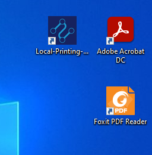
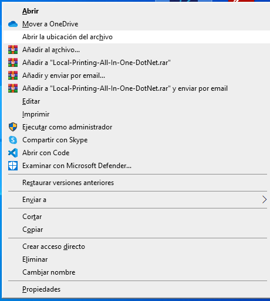
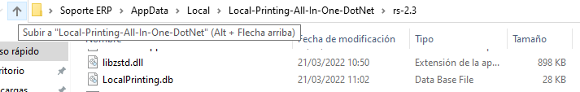
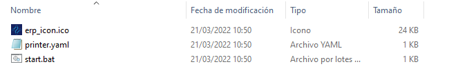
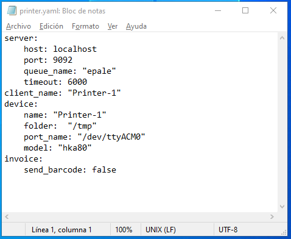
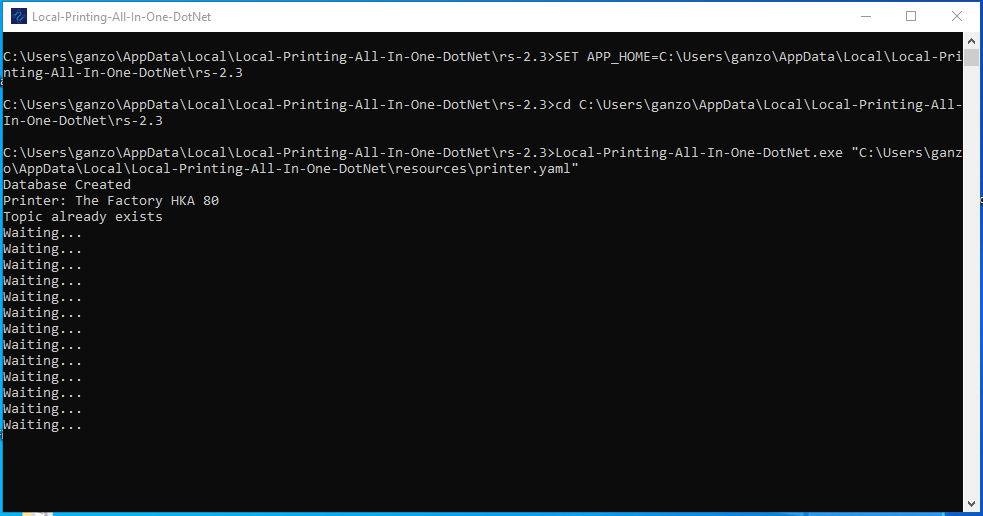
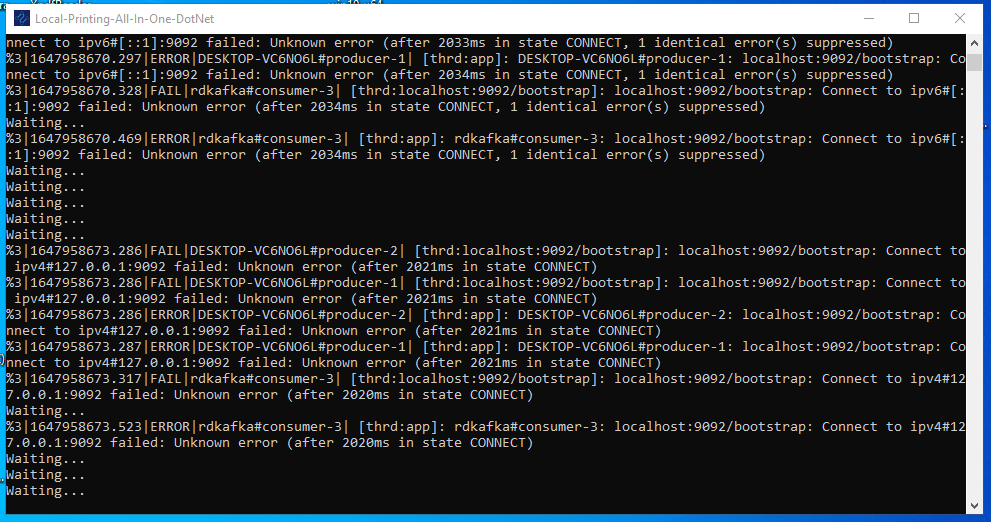
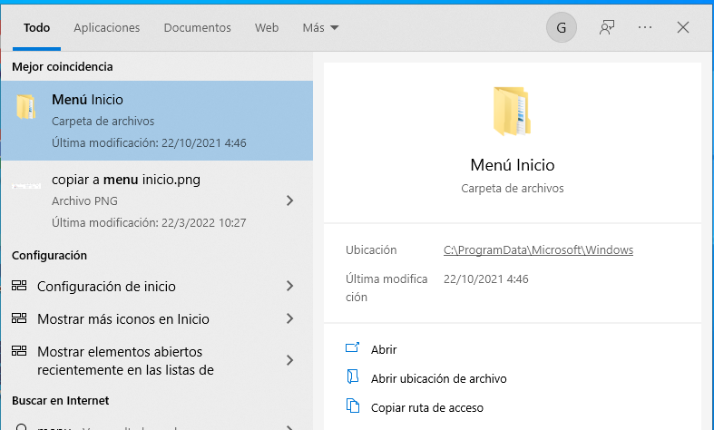
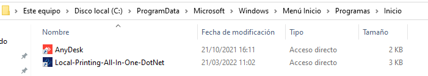

Configuración Cliente de Impresión en Windows
La Configuración de la Aplicación (Local-Printing-All-In-One-DotNet) dependera del uso final de la aplicación ya que puede controlar a impresoras fiscales de The Factory HKA e Imprimir PDF.
Configurar la aplicación para Imprimir PDF(Documentos)
Se Debe tener en cuenta que la aplicación utiliza la impresora predeterminada del sistema operativo y es imprescindible que se encuntre instalada una de las siguientes aplicaciónes para leer archivos PDF Acrobat Reader DC o Foxit Reader
Acceder al directorio de el Acceso Directo en el escritorio (Local-Printing-All-In-One-DotNet) resultante luego de instalar la apliciación, o en su defecto la siguiente ruta:
C:\Users\(Usuario de Windows)\AppData\Local\Local-Printing-All-In-One-DotNet\



Si accedes usando el Acceso directo debes regresar una carpeta atras, la ruta previamente menciónada debe Existir la siguiente distribuición de directorios.
Configurar el paramteros de la aplicación en archivo printer.yaml
Para realizar este paso se debe acceder la carpeta resources.

Abrimos el siguiente archivo printer.yaml el cual tiene la siguiente estructura.

Al modificar el archivo se deben respetar las identaciónes y espacios en blanco, ya que de no ser asi la aplicación no iniciara.
server:
host: localhost
port: 9092
queue_name: "epale"
timeout: 6000
client_name: "Printer-1"
device:
name: "Printer-1"
folder: "/tmp"
port_name: "/dev/ttyACM0"
model: "hka80"
invoice:
send_barcode: false
A continuación se Describe cada campo:
Sección server:
host: Dominio o Dirección IP donde se encuentra ejecutandose el servicio de cola de Kafka.
port: Puerto por el cual responde el servicio de cola de Kafka, en este parametro no se deben colocar puntos ni comas.
queue_name: Nombre de cola de impresión,
timeout: Tiempo de espera de respuesta, esta expresado en ms
client_name: Nombre de impresora dentro de la cola de impresión (Para el caso de la impresión de PDF se puede colocar el departamento o el nombre tiene la impresora en windows)
Sección device:
name: Nombre con el que se identifica la impresora (Es recomendable colocar el mismo nombre que se coloco en client_name)
folder: Ruta de creación archivos temporales (No modificar este parametro)
port_name: Puerto donde esta conectada la impresora fiscal (Solo se usa con impresoras fiscales)
model: Modelo de la impresora fiscal (Solo se usa con impresoras fiscales)
Sección invoice:
send_barcode: Enviar Codigo de barras (Solo se usa con impresoras fiscales)
Iniciar la aplicación para verificar la correcta configuración
Si la apliciación esta correctamente configurada al iniciarla debe mostrar la siguiente consola de terminal.

Si por el contrario sucede uno de las siguiente casos:
La consola se cierra inmediatamente al iniciar la aplicación, esto se debe que los parametros no estan configurados correctamento on no se respeto la estructura del archivo printer.yaml
Inicia la aplicación y muestra lo siguiente:

Esto sucede debido a que hay un error en los datos de conexión verificar los parametros host y port.
Copiar Acceso directo a Menú inicio, para que la aplicación inicie con el sistema operativo, este paso solo debe hacerse una vez confirmado que la aplicación funcióne correctamente.
Buscar el siguiente directorio y Copiar en su interior el acceso directo Local-Printing-All-In-One-DotNet.

C:\ProgramData\Microsoft\Windows\Start Menu\Programs\StartUp

Prueba de reinicio.
Se debe reiniciar el equipo, al iniciar nuevamente automaticamente debe iniciar la aplicación.
De ser asi la aplicación esta Configurada y lista para su uso, en este punto se puede proceder a hacer la prueba de impresión desde ADempiere.
Configurar la aplicación para Imprimir Documentos Fiscales con The Factory HKA
Se Debe tener en cuenta que la aplicación utiliza la impresora predeterminada del sistema operativo y es imprescindible que se encuntre instalada una de las siguientes aplicaciónes para leer archivos PDF Acrobat Reader DC o Foxit Reader
Acceder al directorio de el Acceso Directo en el escritorio (Local-Printing-All-In-One-DotNet) resultante luego de instalar la apliciación, o en su defecto la siguiente ruta:
C:\Users\(Usuario de Windows)\AppData\Local\Local-Printing-All-In-One-DotNet\
Si accedes usando el Acceso directo debes regresar una carpeta atras, la ruta previamente menciónada debe Existir la siguiente distribuición de directorios.
Configurar el paramteros de la aplicación en archivo printer.yaml
Para realizar este paso se debe acceder la carpeta resources.
Abrimos el siguiente archivo printer.yaml el cual tiene la siguiente estructura.
Al modificar el archivo se deben respetar las identaciónes y espacios en blanco, ya que de no ser asi la aplicación no iniciara.
server:
host: localhost
port: 9092
queue_name: "epale"
timeout: 6000
client_name: "Printer-1"
device:
name: "Printer-1"
folder: "/tmp"
port_name: "COM4"
model: "hka80"
invoice:
send_barcode: false
A continuación se Describe cada campo:
Sección server:
host: Dominio o Dirección IP donde se encuentra ejecutandose el servicio de cola de Kafka.
port: Puerto por el cual responde el servicio de cola de Kafka, en este parametro no se deben colocar puntos ni comas.
queue_name: Nombre de cola de impresión
timeout: Tiempo de espera de respuesta, esta expresado en ms
client_name: Nombre de impresora dentro de la cola de impresión (Se Recomienda para este caso colocar el serial de la impresora fiscal)
Sección device:
name: Nombre con el que se identifica la impresora (Es recomendable colocar el mismo nombre que se coloco en client_name)
folder: Ruta de creación archivos temporales (No modificar este parametro)
port_name: Puerto donde esta conectada la impresora fiscal (Ej. COM4)
model: Modelo de la impresora fiscal, de momento solo esta Soportada la impresora hka80 de The Factory HKA
Sección invoice:
send_barcode: Enviar Codigo de barras solo admite valores booleanos (true o false), previamente deben estar cofigurados los flags correspondientes en la programción de la impresora fiscal para imprimir codigos de barras.
Iniciar la aplicación para verificar la correcta configuración
Si la apliciación esta correctamente configurada al iniciarla debe mostrar la siguiente consola de terminal.
Si por el contrario sucede uno de las siguiente casos:
La consola se cierra inmediatamente al iniciar la aplicación, esto se debe que los parametros no estan configurados correctamento on no se respeto la estructura del archivo printer.yaml
Inicia la aplicación y muestra lo siguiente:
Esto sucede debido a que hay un error en los datos de conexión verificar los parametros host y port.
Copiar Acceso directo a Menú inicio, para que la aplicación inicie con el sistema operativo.
Buscar el siguiente directorio y Copiar en su interior el acceso directo Local-Printing-All-In-One-DotNet.
C:\ProgramData\Microsoft\Windows\Start Menu\Programs\StartUp
Prueba de reinicio.
Se debe reiniciar el equipo, al iniciar nuevamente automaticamente debe iniciar la aplicación.
De ser asi la aplicación esta Configurada y lista para su uso, en este punto se puede proceder a hacer la prueba de impresión desde ADempiere.